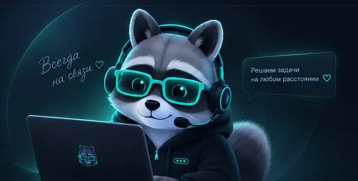

Open source · Self-hosted · AGPL-3.0
EnotDesk
Удалённая помощь — без установки
Специалист помогает клиенту за пару минут: тот открывает один файл, называет одноразовые ID и пароль — и доступ появляется. Закрыл окно — доступ исчез. Сервер — ваш собственный.

Скачать
Бесплатно и открыто
Файлы берутся напрямую из официальных релизов GitHub. Сервер — tarball с установщиком за один прогон.
Исходный код: github.com/Flint-sega/enotdesk · лицензия AGPL-3.0 · сборка из тегов воспроизводима на CI.
Возможности
Всё, что нужно помощи на расстоянии
Один инструмент для разовых подключений и постоянного обслуживания машин — без облаков третьих сторон.
Запуск без установки
Клиент — один файл для Windows, macOS и Linux. Никаких инсталляторов и прав администратора: открыл, подключился, закрыл.
Одноразовый доступ
Сеанс открывается по одноразовым ID и паролю из обычного чата. Пароль живёт, пока открыто окно: закрыли — доступ исчез.
Оператор из браузера
Подключаться к клиенту можно прямо из браузера — клиент-приложение оператору не требуется.
Обслуживаемые машины
Агент-служба на постоянных машинах: подключение по заявке с обязательной причиной, PIN-политикой и записью в журнал.
Хаб: тикеты и чат
Тикет-система с чатом для сайта, письма из почты и кнопкой «подключиться» прямо в переписке с клиентом.
Ваш сервер, ваши данные
Сервер ставится на вашу машину за один скрипт: Docker или bare-metal, HTTPS через Caddy, медиа через собственный TURN.
Как устроен
От окна клиента до вашей БД — один взгляд
Схема ниже — живая карта проекта: сервер, хаб, службы агентов на трёх ОС, видео-хелпер и путь медиа между машинами.
Полная схема: сигналинг, WebRTC-медиа, DataChannel-каналы (видео, ввод, чат, файлы, терминал) и службы на машине клиента.
Открыть интерактивную схему